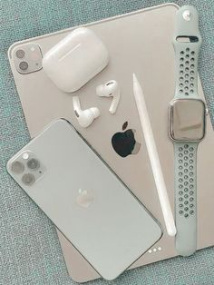

A handheld mobile radio telephone service was envisioned in the early stages of radio engineering. In 1917, Finnish inventor Eric Tigerstedt filed a patent for a "pocket-size folding telephone with a very thin carbon microphone". Early predecessors of cellular phones included analog radio communications from ships and trains. The race to create truly portable telephone devices began after World War II, with developments taking place in many countries. The advances in mobile telephony have been traced in successive "generations", starting with the early zeroth-generation (0G) services, such as Bell System's Mobile Telephone Service and its successor, the Improved Mobile Telephone Service. These 0G systems were not cellular, supported few simultaneous calls, and were very expensive. The Motorola DynaTAC 8000X. In 1983, it became the first commercially available handheld cellular mobile phone. The first handheld cellular mobile phone was demonstrated by John F. Mitchell[11][12] and Martin Cooper of Motorola in 1973, using a handset weighing 2 kilograms (4.4 lb).[2] The first commercial automated cellular network (1G) analog was launched in Japan by Nippon Telegraph and Telephone in 1979. This was followed in 1981 by the simultaneous launch of the Nordic Mobile Telephone (NMT) system in Denmark, Finland, Norway, and Sweden.[13] Several other countries then followed in the early to mid-1980s. These first-generation (1G) systems could support far more simultaneous calls but still used analog cellular technology. In 1983, the DynaTAC 8000x was the first commercially available handheld mobile phone. A handheld mobile radio telephone service was envisioned in the early stages of radio engineering. In 1917, Finnish inventor Eric Tigerstedt filed a patent for a "pocket-size folding telephone with a very thin carbon microphone". Early predecessors of cellular phones included analog radio communications from ships and trains. The race to create truly portable telephone devices began after World War II, with developments taking place in many countries. The advances in mobile telephony have been traced in successive "generations", starting with the early zeroth-generation (0G) services, such as Bell System's Mobile Telephone Service and its successor, the Improved Mobile Telephone Service. These 0G systems were not cellular, supported few simultaneous calls, and were very expensive. The Motorola DynaTAC 8000X. In 1983, it became the first commercially available handheld cellular mobile phone. eature phone is a term typically used as a retronym to describe mobile phones which are limited in capabilities in contrast to a modern smartphone. Feature phones typically provide voice calling and text messaging functionality, in addition to basic multimedia and Internet capabilities, and other services offered by the user's wireless service provider. A feature phone has additional functions over and above a basic mobile phone, which is only capable of voice calling and text messaging.